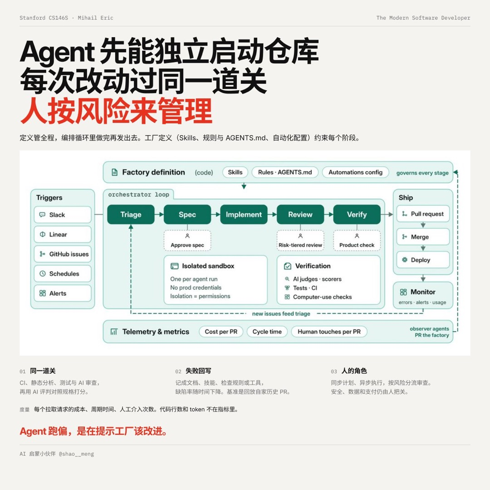
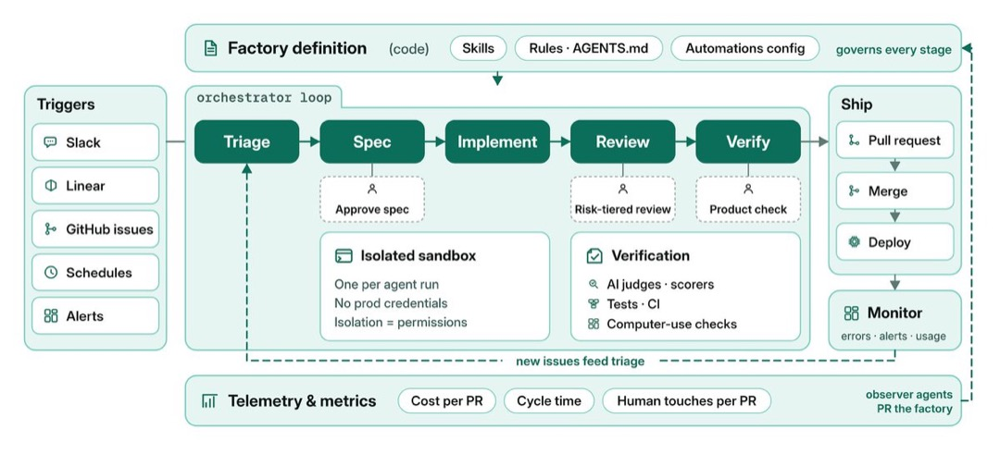
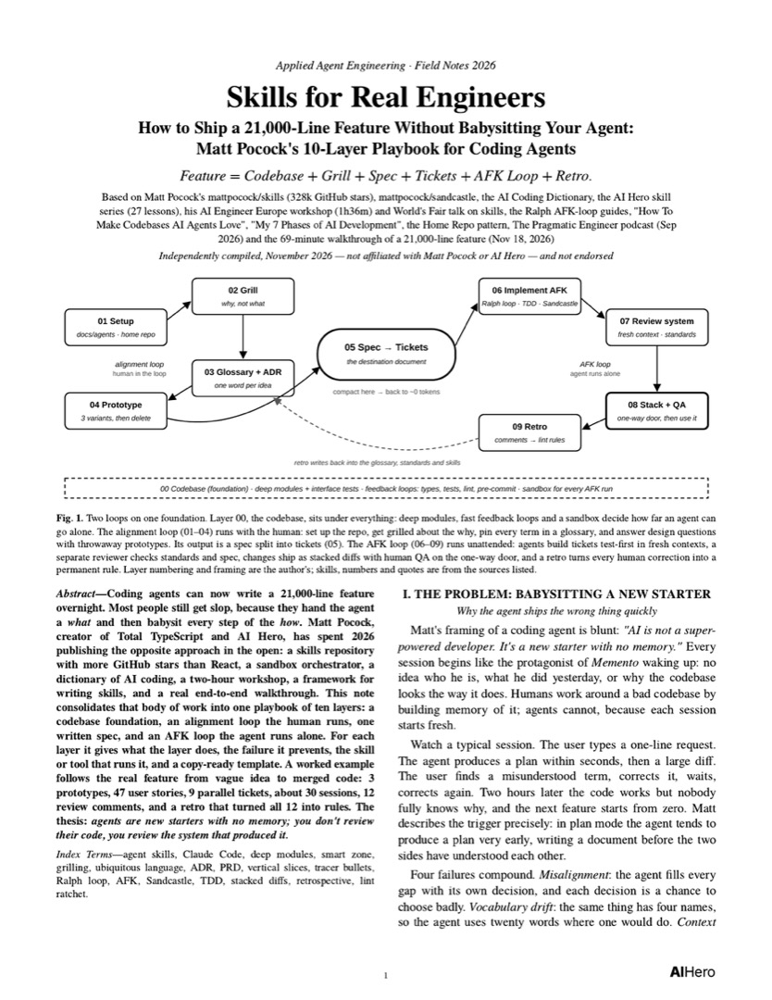

本期速览
01 斯坦福课程画出软件工厂组件图
02 DeepSeek 7万行代码零致命漏洞
03 Chord宿主API支持热更新与恢复
04 OpenAI披露蒸馏拦截与新防护
05 Agent十层流程交付2.1万行功能
01｜斯坦福课程画出软件工厂组件图
来源（X） · @shao__meng · 2026-11-21 09:48
定义管全程，编排循环里做完再发出去
图的顶层是工厂定义，用代码来管：Skills、规则和 AGENTS.md、自动化配置，约束每一个阶段。
左边是触发源：Slack、Linear、GitHub issues、定时任务和告警。
中间是编排循环：分诊、规格、实现、审查、核验，然后进入发布：拉取请求、合并、部署，再监控错误、告警和用量。规格要人批准，审查按风险分级，核验还有产品检查。实现跑在隔离沙箱里：每次 Agent 运行一台，不带生产凭证，隔离本身就是权限边界。
核验一侧是 AI 评判和打分、测试与 CI，以及实际操作环境里的检查。监控里冒出的新问题会回到分诊；还有观察用的 Agent 会给工厂定义提拉取请求，等于工厂也能改自己。
底下的度量是每个拉取请求的成本、周期时间和人工介入次数。
同一道关，失败要回写进系统
无论改动是谁或什么提出的，都要过同一道关：CI、静态分析、测试和 AI 审查，再用 AI 评判对照规格给整次运行打分。
他写最好的基准是自家历史：回放过去的拉取请求，比较不同模型和配置在成本与质量上的表现。缺陷漏过去时，要把原因记下，做成文档、技能、检查规则或工具，让缺陷率随时间下降。
Agent 跑偏，是在提示工厂该改进。人的角色从执行者转向管理者：同步做计划，异步去执行，按风险分流审查，安全、数据和支付仍由人把关。度量看每个拉取请求的成本、周期时间和人工介入次数，代码行数和 token 不在他列的指标里。

引用内容
Mihail Eric @mihail_eric
中文译文
这就是人们所说的软件工厂的全部组成部分。
几个核心原则：
𝗔𝗴𝗲𝗻𝘁 𝗿𝗲𝗮𝗱𝗶𝗻𝗲𝘀𝘀 𝗰𝗼𝗺𝗲𝘀 𝗳𝗶𝗿𝘀𝘁（Agent 就绪度优先）。Agent 需要访问任务所需的工具、一个隔离的运行环境，以及一个能自行启动并验证的仓库。如果 Agent 无法在没有人类的情况下启动你的开发环境，你就还无法构建一个工厂。
𝗘𝘃𝗲𝗿𝘆 𝗰𝗵𝗮𝗻𝗴𝗲 𝗰𝗹𝗲𝗮𝗿𝘀 𝘁𝗵𝗲 𝘀𝗮𝗺𝗲 𝗯𝗮𝗿（每次变更都要通过同一道门槛）。CI、静态分析、测试和 AI 审查器会检查每一次变更，无论它是由谁或什么触发的；AI 评审器会对每次完整运行按照规范进行评分。最好的基准是你自己的历史记录：重放过去的 PR，比较不同模型和配置在成本与质量上的表现。
𝗘𝘃𝗲𝗿𝘆 𝗳𝗮𝗶𝗹𝘂𝗿𝗲 𝗶𝗺𝗽𝗿𝗼𝘃𝗲𝘀 𝘁𝗵𝗲 𝘀𝘆𝘀𝘁𝗲𝗺（每次失败都要改进系统）。当一个缺陷溜过去时，记录下原因，并将其转化为文档、技能、lint 规则或工具，使缺陷率随时间下降。Agent 脱轨是一个改进工厂的信号。
人类的角色从执行者转变为管理者。同步规划，异步执行，并按风险路由审查，这样人们仍然掌控安全、数据和支付。然后衡量每个 PR 的成本、周期时间以及每个 PR 的人工干预次数，而不是代码行数或 token 数。
原文
Here are all the components of what people call a software factory.
A few of the core principles:
𝗔𝗴𝗲𝗻𝘁 𝗿𝗲𝗮𝗱𝗶𝗻𝗲𝘀𝘀 𝗰𝗼𝗺𝗲𝘀 𝗳𝗶𝗿𝘀𝘁. An agent needs access to the tools a task requires, an isolated environment to run in, and a repo it can boot and verify on its own. If an agent can't start your dev environment without a human, you can't build a factory yet.
𝗘𝘃𝗲𝗿𝘆 𝗰𝗵𝗮𝗻𝗴𝗲 𝗰𝗹𝗲𝗮𝗿𝘀 𝘁𝗵𝗲 𝘀𝗮𝗺𝗲 𝗯𝗮𝗿. CI, static analysis, tests, and an AI reviewer check every change no matter who or what prompted it, and an AI judge grades each whole run against the spec. The best benchmark is your own history: replay past PRs to compare models and setups on cost versus quality.
𝗘𝘃𝗲𝗿𝘆 𝗳𝗮𝗶𝗹𝘂𝗿𝗲 𝗶𝗺𝗽𝗿𝗼𝘃𝗲𝘀 𝘁𝗵𝗲 𝘀𝘆𝘀𝘁𝗲𝗺. When a defect slips through, capture why and turn it into a doc, a skill, a lint rule, or a tool, so the defect rate falls over time. An agent going off the rails is a signal to improve the factory.
The human role moves from worker to manager. Plan synchronously, execute asynchronously, and route review by risk so people still own security, data, and payments. Then measure cost per PR, cycle time, and human touches per PR, not lines of code or tokens.

02｜DeepSeek 7万行代码零致命漏洞
来源（X） · @hhp121222 · 2026-11-21 07:55
最近编程圈有个实验特别有意思，把现在 AI 写代码的真实玩法彻底给扒明白了。
有个老哥花了 11 周时间，用 DeepSeek 写了整整 7 万多行代码，提交了将近五百次，前后算下来算力成本才花了 30 美金（折合人民币两百多块钱）。
写完之后他自己心里也没底，毕竟 7 万行代码全靠 AI 吐出来的，鬼知道里头埋了多少坑。于是他把整个项目打包，原封不动扔给了价格贵得多的 Claude Opus（业界公认代码审查和逻辑推理最狠的模型）当“质检员”。
Opus 拿着放大镜足足审了 29 轮，最后交出来的体检报告让所有人跌破眼镜：一共挑出 72 个毛病，其中 8 个算比较明显的中等瑕疵，致命级别的崩溃漏洞（Critical）——零个！
两百块钱请个实习生干了三个月写出七万行代码，再请个顶级专家来回审了二十九遍，愣是没挑出致命伤。这事儿传开之后，很多人都在吵到底是 DeepSeek 性价比无敌，还是 Opus 审代码更牛。
其实全看偏了，这个实验里最让人后背发凉、也最值钱的细节，是开发者自己说的那句话：“这 11 周里，我几乎没亲自读过一行代码，所有的精力全花在了定架构约束、立验收规则和给问题分级上。”
你看懂这里头的门道了吗？软件开发的游戏规则，早就彻底变天了。
过去大家聊 AI 编程，总觉得它是你的“高级自动补全工具”——AI 写十行，你瞪大眼睛逐行检查八遍，生怕它瞎编乱造。那种模式下，AI 只是个打字员，你还是那个苦哈哈拧螺丝的码农，效率根本起不来。
但现在真正把 AI 玩出花的人，早就把自己从“写代码的人”抽离出来，变成了“包工头 + 质检总监”。
把这事儿拆开看，其实就是一套极其冷酷高效的“双模型制衡流水线”：
• 用极低成本的模型（DeepSeek）当主力施工队：30 美金干出 7 万行代码，主打一个量大管饱、试错不心疼，哪怕推倒重来十遍也没什么经济压力。
• 用最顶级、最昂贵的模型（Opus）当独立监理：不让它干脏活累活，专门负责挑刺、查逻辑漏洞、做安全审计。两个不同家族的模型互相对抗审查，完美避开了同一个模型“自己查自己永远觉得没毛病”的盲区。
• 人类退居二线，死磕“规矩”：开发者不看具体代码怎么写，但必须把地基打死——比如规定好模块之间怎么通信、接口标准是什么、什么样算合格、什么级别的 Bug 必须立刻返工。只要规矩立得够死，底下干活的 AI 就翻不出五指山。
这也给所有普通打工人提了个醒：未来真正值钱的，早就不是你手速有多快、语法背得有多熟了。
当干活的苦力成本趋近于零时，谁能把需求拆解清楚、谁能定出滴水不漏的验收标准、谁能指挥不同的 AI 互相监督把活干漂亮，谁才是真正不可替代的超级个体。
03｜Chord宿主API支持热更新与恢复
来源（X） · @fttt007 · 2026-11-21 11:00
核心 API：
createHost()：创建 Host。
route()：定义路由规则。
resolve()：解析目标 Host 的连接，应用可按需启动 Worker。
connect() / accept()：建立 Host 间的连接。
load()：加载插件和 Facet。
get() / hold()：获取 Object 引用，等待就绪或持续跟踪状态。
reload()：热更新插件。
close()：关闭 Host。
最有启发的是 Host Address 与 Incarnation 的区别：
Host Address 是稳定的逻辑地址，Incarnation 则标识 Host 的某一次运行。
Worker 重启后可以保持相同的 Host Address，但会获得新的 Incarnation。Chord 能够识别这一变化，并重新建立远程对象的持有关系。
结合 Pi Durable，Worker 连接 Server、加载插件后，可以通过 Harness.resume() 恢复符合条件的持久化任务。
此外，Chord 提供 host.activity，记录 References、Calls、Jobs 和 Lingering 等活动状态，由应用决定 Worker 何时空闲退出。
这让我逐渐形成了一个多 Agent 系统的架构思路：
专业 Agent 像长期在职的员工，拥有稳定身份和持久化工作记录；任务来了才启动对应 Worker，工作结束后释放计算资源。
Chord 负责分布式对象的定位与通信，Durable 负责持久化执行机制，应用负责 Worker 的启动、调度和退出。
Agent 可以长期存在，但运行它的进程不必一直存在。
这正是我认为未来多 Agent 系统值得探索的方向。
#AIAgents #Chord #Pi #DistributedSystems
04｜OpenAI披露蒸馏拦截与新防护
来源（X） · @Xudong07452910 · 2026-11-21 08:40
它在新文章里直接点了名。2 月，OpenAI 向美国国会通报，发现 DeepSeek 在尝试蒸馏美国的前沿模型；9 月，它说拦下了一起专门套取推理过程的行动，并把其中核心部分归到和月之暗面（Kimi 背后的公司）有关的人员身上。文章还说，最近又拦下了几起，之后会公布更多。
OpenAI 担心的不只是知识产权。它的说法是，别人拿它的输出训练出能力相近的模型，却没有带上同样的安全限制，比如原模型会拒绝的网络攻击请求，蒸馏出来的模型可能就照做了。它还把这件事直接上升到了国家安全层面。
文章里有几个细节挺值得看:
OpenAI 每周封禁的蒸馏账号，从几千到几万个不等，今年夏天明显变多。
它们最想守住的是模型的思维链。内部实验发现，用完整推理过程训练出来的小模型，能力明显强过只用摘要训练的
GPT-6.2 Astra 加了新防护以后，从历史对话里套出推理过程的成功率，从 54% 降到了 0.2%。
目前这些指控目前都来自 OpenAI 单方面，具体是怎么判定的，外界还看不到。不过有一点比较明确，靠蒸馏追赶的路会越来越难走。
https://openai.com/index/combatting-adversarial-distillation/
05｜Agent十层流程交付2.1万行功能
来源（X） · @0xShoopy · 2026-11-21 04:43
中文译文
Matt Pocock 刚发布了一份 10 页的 PDF，讲如何在不看管你 Agent 的情况下交付一个 21,000 行的功能——从混乱的代码库到合并的 PR，共 10 层：
公式：功能 = 代码库 + Grill + 规范 + 工单 + AFK 循环 + 复盘
大多数人只告诉 Agent "做什么"，然后对每一步"怎么做"进行看管。他的 skills 仓库恰恰相反，而且星标比 React 还多
这是 10 层的作战手册：
第 0 层 → 代码库 - 深度模块 + 快速反馈循环。糟糕的代码库造就糟糕的 Agent
第 1 层 → 配置 - 告诉 skills 你的仓库是如何运作的，只需一次
第 2 层 → Grill - Agent 会对你进行访谈，直到每个分支都得到解决。给它"为什么"
第 3 层 → 术语表 - 每个概念一个词，"为什么"写在 ADR 中
第 4 层 → 原型 - 3 个一次性变体，保留决策
第 5 层 → 规范 → 工单 - 垂直切片，每个都可以演示
第 6 层 → AFK 循环 - Agent 选择下一个工单，先测试，提交，整夜重复
第 7 层 → 审查 - 一个全新上下文的审查器在你查看之前先检查你的标准
第 8 层 → 技术栈 + QA - 人类只审查单向门
第 9 层 → 复盘 - 每条审查评论都变成一条 lint 规则
结果：47 个用户故事，9 个并行工单，约 21,000 行代码，全部 12 条审查评论都变成了规则
这份 10 页的 PDF 包含模板、一个你可以复制的 Ralph 循环、一份技能清单和一条 7 天构建路径
收藏它，然后阅读下面文章中关于如何将多个 Agent 接入同一个系统的内容 ↓
原文
Matt Pocock just dropped a 10-page PDF on shipping a 21,000-line feature without babysitting your agent - 10 layers from messy codebase to merged PR:
the formula: Feature = Codebase + Grill + Spec + Tickets + AFK Loop + Retro
most people hand the agent a "what", then babysit every step of the "how". his skills repo does the opposite and has more stars than React
here's the playbook in 10 layers:
layer 0 → codebase - deep modules + fast feedback loops. bad codebases make bad agents
layer 1 → setup - tell the skills how your repo works once
layer 2 → grill - the agent interviews you until every branch is resolved. give it the why
layer 3 → glossary - one word per idea, the why in ADRs
layer 4 → prototype - 3 throwaway variants, keep the decision
layer 5 → spec → tickets - vertical slices, every one demoable
layer 6 → AFK loop - the agent picks the next ticket, tests first, commits, repeats overnight
layer 7 → review - a fresh-context reviewer checks your standards before you look
layer 8 → stack + QA - humans review only the one-way door
layer 9 → retro - every review comment becomes a lint rule
the result: 47 user stories, 9 parallel tickets, ~21,000 lines, all 12 review comments turned into rules
this 10-page PDF has the templates, a Ralph loop you can copy, a skill checklist and a 7-day build path
bookmark it, then read how to wire many agents into one system in the article below ↓

引用内容
Shoopy @0xShoopy
中文译文
原文
06｜以太坊FHE实现可组合链上隐私
来源（X） · @theotangyu · 2026-11-21 10:12
以太坊这篇介绍的全同态加密，想把公开验证和数据保密分开。
过去，处理数据通常需要先解密。
全同态加密允许直接处理加密数据，计算结果也保持加密，不同合约还能继续调用。
比如发工资，系统可以完成金额计算，不必把每个人的收入公开给所有人。
不过，帖子里的保密转账方案主要隐藏金额，转账双方仍可能被看见。
隐藏金额和隐藏身份，解决的是不同问题。
我更关心这种技术能不能把工资、企业付款这些日常需求做好，而不是再增加一个听起来厉害的技术名词。
引用内容
Ethereum @ethereum
中文译文
0/ 以太坊上的隐私大多是 ZK 路线，FHE 允许一种不同类型的隐私——一种存在于共享状态之上、可跨合约组合、抗量子攻击且与以太坊核心构建模块相一致的隐私。
来自 @zama 的 @arik_g 的客串推文串
原文
0/ Privacy on Ethereum has mostly been ZK-pilled, FHE allows a different kind of privacy - privacy that lives on shared state, composable across contracts, quantum secure and aligned with Ethereum’s core building blocks.
A guest thread by @arik_g from @zama
07｜minimind三块钱自训64M大模型
来源（X） · @GitTrend0x · 2026-11-21 08:30
5 个星标暴增最狠的项目，专业拆解下！
1. firecrawl/firecrawl
给 Agent 喂知识的基础设施：把网页变成干净的 Markdown，能抓单页、爬全站、画站点地图；本地版一个二进制就能跑，还能直接挂成 MCP 服务器，云端版再加搜索和 550+ 个数据源。
🔗 直达：https://github.com/firecrawl/firecrawl
Agent 再聪明，喂进去的是垃圾网页也白搭，它负责把原料洗干净。1,226 星一天，总星 20 万+，Agent 数据底座稳坐 C 位！
🟢
2. XiaoYouChR/Ghost-Downloader-3
号称「你只需要这一个下载器」：HTTP、磁力/BT、FTP、M3U8、DASH、eD2k 全包，YouTube、B 站能选画质、带字幕、整季下，GitHub 和 HuggingFace 走镜像加速；浏览器扩展嗅探网页视频一键接管，Windows、macOS、Linux、Android 四端原生，还兼容 aria2 的 RPC 接口。
🔗 直达：https://github.com/XiaoYouChR/Ghost-Downloader-3
以前电脑里装五个下载工具，现在一个全搞定。1,082 星一天，国产开源下载神器直接冲上热榜！
🟢🟢
3. zhouxiaoka/autoclip
一个链接，一键出片：开源 AI 剪辑桌面工具，把播客、访谈、课程这类长视频自动剪成短视频，同时生成字幕、封面和发布文案，适配抖音、小红书、TikTok、Reels、Shorts、B 站；在自己电脑上剪辑渲染，软件免费，桌面、CLI、MCP 三种用法。
🔗 直达：https://github.com/zhouxiaoka/autoclip
切片号以前熬夜剪片，现在贴个链接去泡杯茶就出片了。983 星一天，内容人的生产力外挂！
🟢🟢🟢
4. mjmirza/app-store-compliance
App Store 和 Google Play 防拒审手册 + 自动守门脚本：整理了 117 种被拒原因和修法，两条命令扫描你的 iOS/安卓项目，有严重风险直接打印 BLOCKED 并给出修复建议；还能装进 Claude Code、Codex、Cursor 等编程 Agent，每次提交前自动拦一道。
🔗 直达：https://github.com/mjmirza/app-store-compliance
被拒一次就是一周，提交前花一分钟扫一遍，省下的是整个上线节奏。874 星一天，独立开发者必收藏！
🟢🟢🟢🟢
5. jingyaogong/minimind
从 0 训出你自己的 64M 小模型：作者实测单张 3090 跑完 SFT 一轮约 2 小时、GPU 租金约 3 块钱；核心代码全部用 PyTorch 原生手写，覆盖预训练、SFT、LoRA、DPO、PPO/GRPO、工具调用、Agentic RL、蒸馏全流程，Apache 2.0 免费开源。
🔗 直达：https://github.com/jingyaogong/minimind
别人在聊大模型多神秘，它直接把黑盒子拆开给你看。841 星一天，总星 6.7 万+，入门 LLM 的最佳教材！
🟢🟢🟢🟢🟢
⚠️⚠️
总结：
今天的榜单一句话：AI 正在吃掉每一个具体环节，抓数据、下资源、剪视频、过审核、训模型，全都有了开源答案。谁先把这些工具串进自己的工作流，谁就先拿到下一波红利。